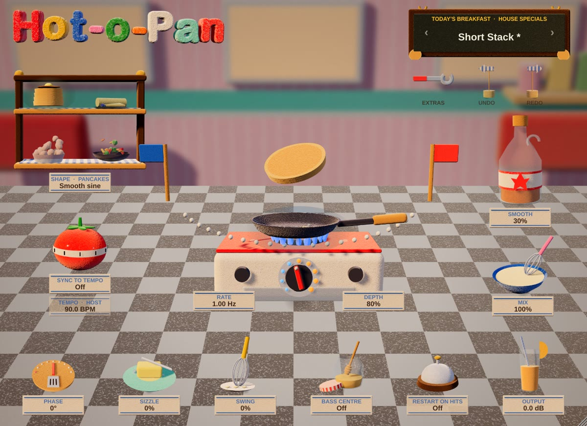

Auto-pan
Hot-o-Pan
A diner auto-panner: the pancake flips between left and right.

What is Hot-o-Pan?
Hot-o-Pan is an auto-pan plugin from a diner kitchen. The pancake flips your sound between left and right, in time with your song. Choose sine, triangle, square or random, add swing and a sizzle of tremolo, and keep the bass centred so the low end never wanders.
What's on the plate
- Cooker dial Rate
- Pan between the flags Depth
- Dresser shelf Shape: sine, triangle, square, random
- Tomato timer Sync to tempo
- Butter Sizzle: tremolo
- Whisk Swing
- Honey jar Bass centre
Great for
- Hi-hats, shakers and synth arps that need movement
- Tremolo guitars and keys
- Wide, moving pads
Works in your DAW
AU, VST3 and AAX on Mac, VST3 on Windows. Logic Pro, Ableton Live, Pro Tools, FL Studio, Cubase, Studio One, Reaper, Bitwig, GarageBand and more. macOS 11 or later (Apple silicon and Intel), Windows 10 and 11 (64-bit).
From $19, yours forever with free updates. Or get it with all 16 in the Full Fridge Bundle, Monthly Pass or Breakfast Club.
More from the menu
Orange Crusher · Popping Candy · Spice Shelf EQ · Popcorn Sandwich Compressor · Cherry on the Top Mastering · Spaghetti Delay · Bread Oven Reverb · Food Fight · Ghost Pepper Clipper · Gummy Gate · Milkshake Chorus · Burnt Toast Tape Machine · Noodle Filter · Muesli Granular · Butter Spread